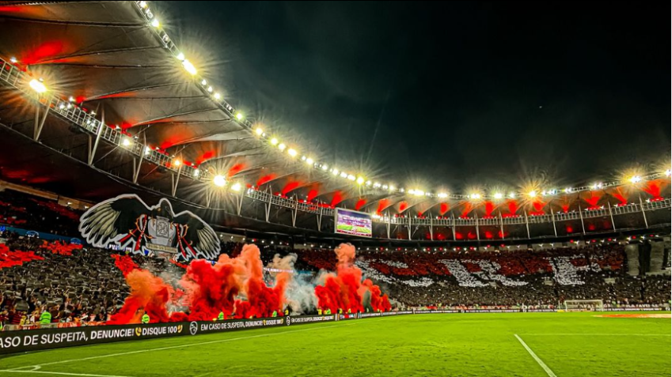
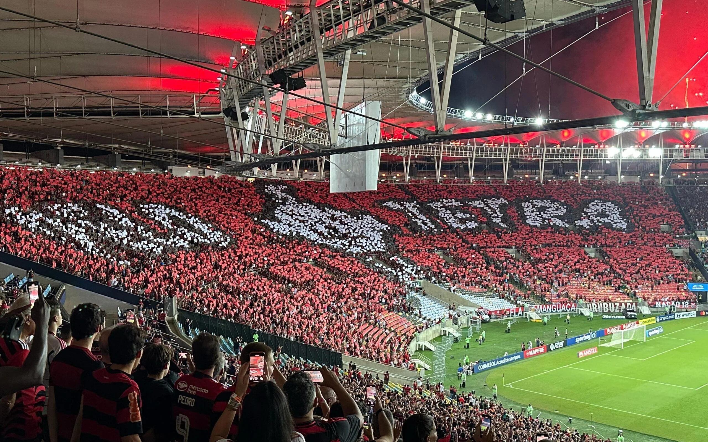

Estádio do Maracanã
O Estádio Jornalista Mário Filho, carinhosamente conhecido como Maracanã, é muito mais do que um palco esportivo: é a verdadeira casa do Clube de Regatas do Flamengo e o coração da Nação Rubro-Negra.
Inaugurado em 1950 para a Copa do Mundo, o Maracanã foi palco das maiores glórias da história do clube. Foi lá que Zico desfilou sua genialidade, tornando-se o maior artilheiro da história do estádio com 334 gols. Foi lá também que o Mengão levantou taças inesquecíveis, como os Campeonatos Brasileiros, Copas do Brasil e a Copa Libertadores.


Curiosidades e Estatísticas
- Inauguração: 16 de junho de 1950
- Capacidade atual: Mais de 78.000 espectadores
- Maior artilheiro: Zico (334 gols)
- Administração: Atualmente gerido em conjunto por Flamengo e Fluminense